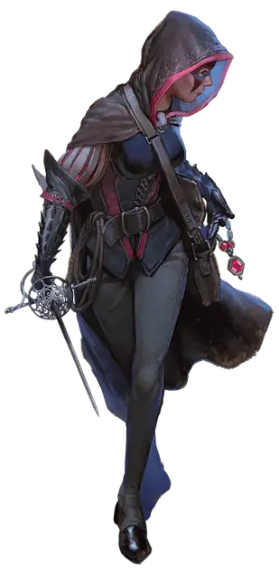

Чёрная гадюка
Black Viper
Средний Гуманоид (Человек), хаотично-нейтральный, именной НИП

Класс Доспеха 16 (проклёпанная кожа)
Хиты 84 (13к8 + 26)
Скорость 30 футов
| мод | спас | ||
|---|---|---|---|
| СИЛ | 11 | +0 | +0 |
| ЛОВ | 18 | +4 | +7 |
| ТЕЛ | 14 | +2 | +2 |
| мод | спас | ||
|---|---|---|---|
| ИНТ | 11 | +0 | +3 |
| МДР | 11 | +0 | +0 |
| ХАР | 12 | +1 | +1 |
Навыки Акробатика +7, Атлетика +3, Восприятие +3, Ловкость рук +7, Скрытность +7
Чувства пассивное Восприятие 13
Языки Общий, Воровской жаргон
Опасность 5 (1800 опыта)
Бонус мастерства +3
Особенности
Хитрое действие. Чёрная гадюка может совершать как бонусное действие, действия Рывок, Отход или Засада.
Увёртливость. Если Чёрная гадюка подвергается действию эффекта, позволяющего совершить спасбросок Ловкости, чтобы получить только половину урона, Чёрная гадюка в место этого не получает урон, если преуспеет в спасброске, и получит лишь половину урона, если провалит спасбросок.
Скрытая атака (1/ход). Чёрная гадюка причиняет дополнительный урон 14 (4к6), если попадает по цели атакой оружием, совершённой с преимуществом к броску атаки, или же если цель находится в пределах 5 футов от дееспособного союзника Чёрной гадюки, и Чёрная гадюка совершала бросок атаки без помехи
Действия
Мультиатака. Чёрная гадюка совершает три атаки рапирой.
Рапира. Рукопашная атака оружием: +7 к попаданию, досягаемость 5 футов, одна цель. Попадание: Колющий урон 7 (1к8 + 4).
Ручной арбалет. Дальнобойная атака оружием: +7 к попаданию, дистанция 80/320 футов, одна цель. Попадание: Колющий урон 7 (1к6 + 4).
Реакции
Невероятное уклонение. Чёрная гадюка уменьшает в двое урон от попавшей по ней атаки. Чёрная гадюка должна видеть нападавшего.
Описание
Чёрной Гадюкой звали печально известную воровку, карманницу, грабительницу и убийцу, которая умерла сто лет назад после долгой преступной карьеры. Недавно дерзкая юная аристократка Эсвель Рожнар присвоила личину Чёрной Гадюки, чтобы тайно совершать преступления. Как и многие благородные, Эсвель сплетничает о подвигах Чёрной Гадюки, чтобы добавить преступнице таинственности.
Более века назад семейство Рожнаров было осуждено и изгнано за работорговлю, которая в Вотердипе категорически запрещена, но с тех пор вернулось. Рожнаров удручает невозможность восстановить прежнюю репутацию. Работорговля продолжается в Амне и других местах, и не то чтобы у других благородных не было скелетов в шкафах. Но из-за небольшой семейной ссоры, ставшей достоянием общественности, имя Рожнаров уже сто лет как притча во языцех. Семья пыталась доказать, что слухи о них ложны, и вернуть к себе уважение, а потому Эсвель воспитали в строжайших традициях аристократии, таская её по урокам этикета, танцев и осанки, как подобает девице её круга.
Поначалу Эсвель бунтовала открыто, но из-за её по ведения двери в доме начали запирать на ночь, а днём охрана следила за каждым её шагом. Так что она научилась взламывать замки, воровать ключи с поясов и из кошелей, лазать по стенам и ускользать от охраны. Днём она изображала идеальную дочь, а ночью пускалась во все тяжкие. Чтобы скрыть от встречных свою личность, она носит капюшон и маску и переодевается из дорогой одежды в практичную, которую родители никогда бы ей не позволили носить.
Одной из лучших находок Эсвель стала идея возродить легенду о Чёрной Гадюке. Когда она отбрасывает плащ и выставляет напоказ свой костюм, большинство роняет кошельки и убегает. Если это не помогает, ей обычно достаточно вынуть кинжал. Конечно, многие из её жертв-благородных сделаны из другого теста, так что Эсвель научилась и драться. Она знает, что её игра опасна, но ей по нраву, что хоть один член дома Рожнаров завоевал уважение аристократов Глубоководья.